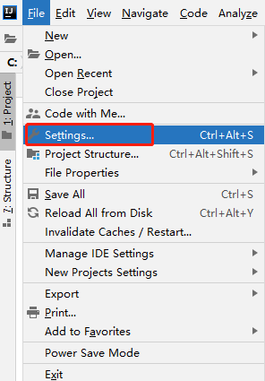
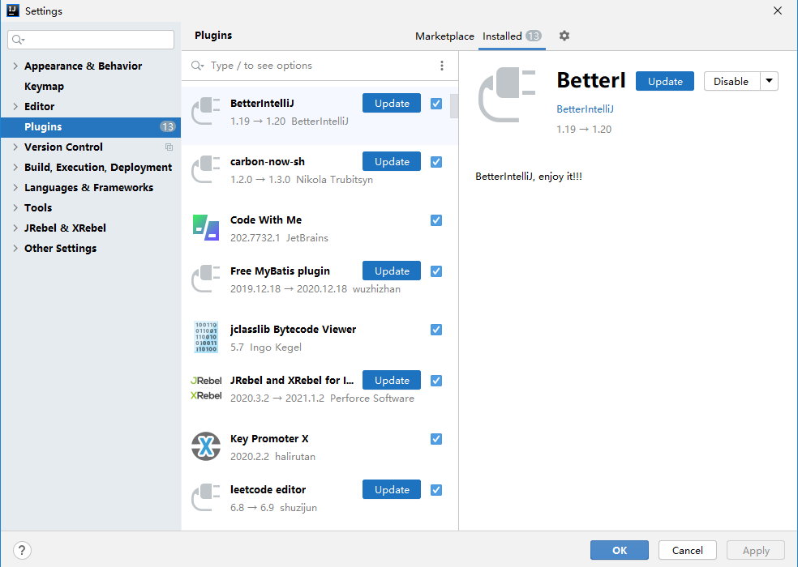
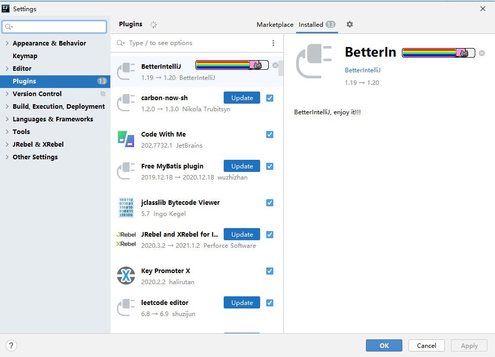
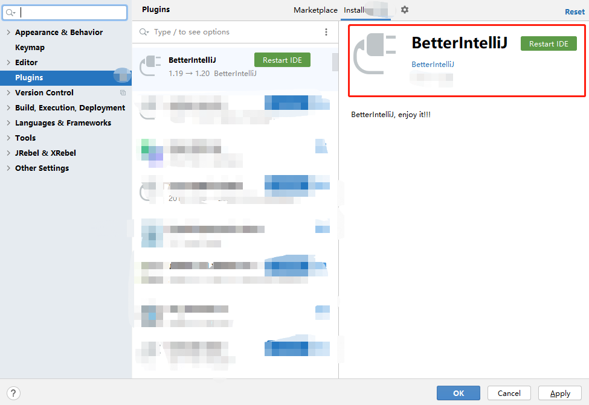
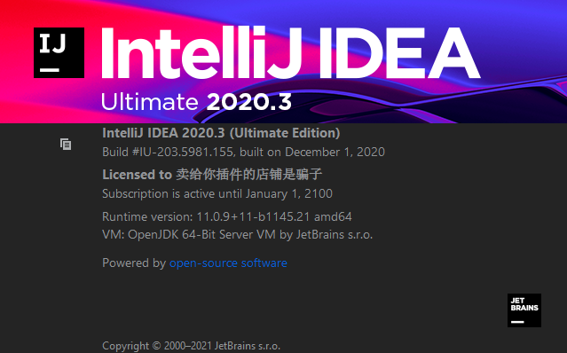

前提条件：你已在IDEA安装了 BetterIntelliJ 插件。
如果你已经安装了 BetterIntelliJ 插件，那么，可以直接在插件中心进行升级。
打开 File->Settings ，如下图：

我们找到 Plugins ，便能看到 BetterIntelliJ 的升级提醒，咱们点击 Update 进行升级即可，如下图所示：


升级完成，便会提醒你重启 IDEA，如下图：

一定要记得重启哦！！！！
由于IDEA的一些bug遗留问题，一定要至少重启两次！！！
这样，便会出现咱们熟悉的界面，如下图：
